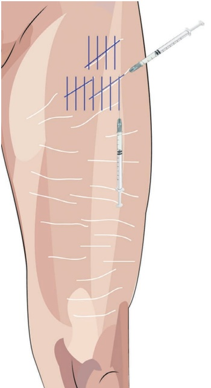
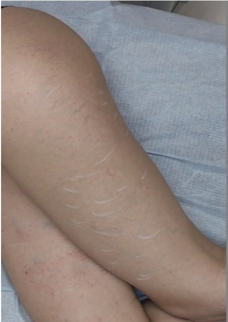
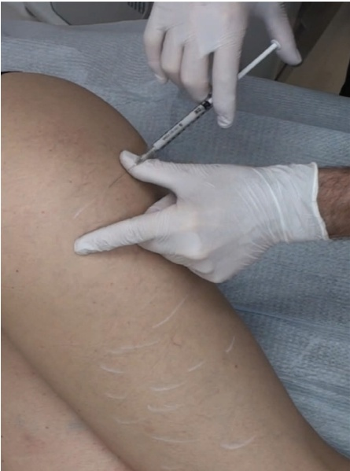
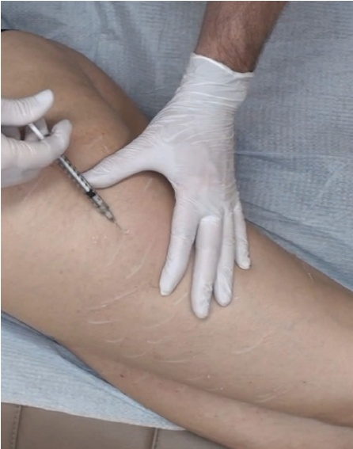

36 四肢：大腿皮肤质量改善
上肢腿部皮肤质量改善
JANI VAN LOGHEM AND PIETER SIEBENGA
36.1 引言
随着年龄的增长，上肢腿部的皮肤由于其纤维结构的变化而失去紧致度。胶原蛋白和弹性纤维的丢失，以及脂肪分布的变化，可能导致不理想的皱纹和皮肤松弛。皮肤松弛现象包括妊娠纹（也称为拉伸纹）和/或橘皮样变（cellulite）[1-4]，常见于女性而非男性[5]，并且在深色皮肤个体中更为突出[6]。通常，这些皮肤变化可归因于青春期、体重突然变化和/或怀孕，并可能对生活质量产生负面影响[7]。用于治疗前侧和后侧上肢腿部的高倍稀释羟基磷灰石钙（CaHA）旨在改善皮肤松弛度和橘皮样变及妊娠纹的外观，增加皮肤的强度和弹性[7-9]。
36.1.1 妊娠纹 (Striae Distensae)
妊娠纹是由于表皮萎缩和网状嵴丢失引起的真皮瘢痕的一种类型[6]。该现象在青春期（6–86%）、怀孕（43–88%）和肥胖（43%）时发病率更高[10]，其确切病因尚不清楚，但人们认为由激素变化介导的胶原结构改变是致病因素[8]。在这些皮肤缺陷中，CaHA可以通过填充妊娠纹来改善妊娠纹的外观，从而增强其美学外观。Casabona 等人已证明了结合使用 CaHA、微针和外用维生素 C 酸治疗妊娠纹的有效性[11]，在本章中，我们还将讨论治疗该皮肤状况的分步流程。
36.2 解剖学危险点
注射应尽可能接近真皮层，在真皮-真皮下交界处进行。应避免静脉曲张静脉，以防止广泛且可能持久的瘀血。
36.3 上肢腿部锐针技术 (UPPER LEG SHARP NEEDLE TECHNIQUE) 注射定位参见图 36.1
36.3.1 分步技术
-
对上肢腿部进行消毒。
-
标记皮肤纹路/皱纹的方向（图 36.2）。
-
将 CaHA 稀释至 1:1 至 1:3（取决于松弛的严重程度）。
-
使用一根长 27G、38 mm 的钝性套管针 (cannula)。
-
沿注射方向拉伸皮肤，以控制针头的正确深度。确保针头位于真皮-真皮下交界处（图 36.3）。
-
沿着皮肤纹路/皱纹的方向注射 CaHA，并用多根垂直于皱纹的注射进行交叉填补（图 36.4）。




-
缓慢地进行每次逆行注射，注入约 0.05–0.1 mL。
-
重复操作，直至标记的皮肤区域均匀覆盖一层稀释的 CaHA。
36.4 术后护理
建议进行注射后的强力按摩，以确保产品得到充分分布。存在静脉曲张的情况下，可能出现大面积瘀伤。
36.5 实现最佳效果的附加治疗
对于松弛更严重的患者，可能需要结合使用其他皮肤紧致技术（例如射频、可视化微焦超声、微针等）进行联合疗法，以达到最佳效果。
参考文献
[1] B. Barankin et al., “The skin in pregnancy,” J Cutan Med Surg, vol. 6, no. 3, pp. 236–240, 2002.
[2] M. L. Elsaie et al., “Striae distensae (stretch marks) and different modalities of therapy: An update,” Dermatol Surg, vol. 35, no. 4, pp. 563–573, 2009.
[3] S. Luebberding et al., “Cellulite: An evidence-based review,” Am J Clin Dermatol, vol. 16, no. 4, pp. 243–256, 2015.
[4] K. Goldie et al., “Global consensus guidelines for the injection of diluted and hyperdiluted calcium hydroxylapatite for skin tightening,” Dermatol Surg, vol. 44, no. Suppl 1, pp. S32–S41, 2018.
[5] N. Mendes et al., “A narrative review of current striae treatments,” Healthcare, vol. 10, no. 12, p. 2565, 2022.
[6] A. M. Oakley, B. C. Patel, "Stretch Marks," StatPearls [internet], 2023: https://www.ncbi.nlm.nih.gov/books/NBK436005/.
[7] V. Cogorno Wasylkowski, “Body vectoring technique with Radiesse® for tightening of the abdomen, thighs, and brachial zone,” Clin Cosmet Investig Dermatol, vol. 8, pp. 267–273, 2015.
[8] G. Singh, L. P. Kumar, “Striae distensae,” Indian J Dermatol Venereol Leprol, vol. 71, no. 5, pp. 370–372, 2005.
[9] G. Casabona, G. Pereira, “Microfocused ultrasound with visualization and calcium hydroxylapatite for improving skin laxity and cellulite appearance,” Plast Reconstr Surg Glob Open, vol. 5, no. 7, 2017.
[10] N. Mendes et al., “A narrative review of current striae treatments,” Healthcare, vol. 10, no. 12, p. 2565, 2022.
[11] G. Casabona, P. Marchese, “Calcium hydroxylapatite combined with microneedling and ascorbic acid is effective for treating stretch marks,” Plast Reconstr Surg Glob Open, vol. 5, no. 9, 2017.